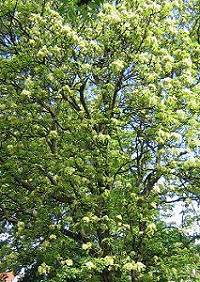
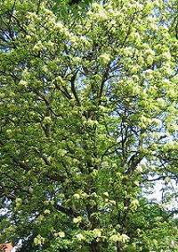

Woher kommt der Name Blumenesche?
 Ihre Blüten sind auffälliger als die Blüten der Gemeinen Esche.
Ihre Blüten sind auffälliger als die Blüten der Gemeinen Esche.
Zur Blütezeit sieht der Baum fast aus wie eine Blumenwiese.
Auf Englisch heißt die Blumenesche Flowering Ash.
 | Woher kommt der Name Blumenesche? |